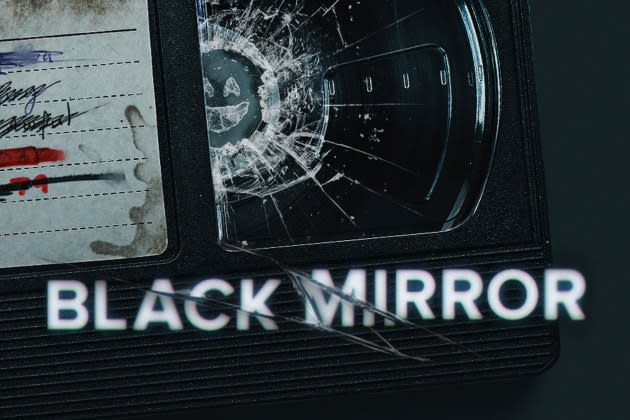

Merhaba, ben Ertekin Orak.
İzmirliyim, ilk çocukluğum Ankara'da geçti, şimdilerde İstanbul'da yaşıyorum.
Black Mirror
Black Mirror; drama, macera, hiciv ve bilimkurgu tarzında 4 Aralık 2011 tarihinde yayınlanmaya başlayan İngiliz televizyon dizisi.